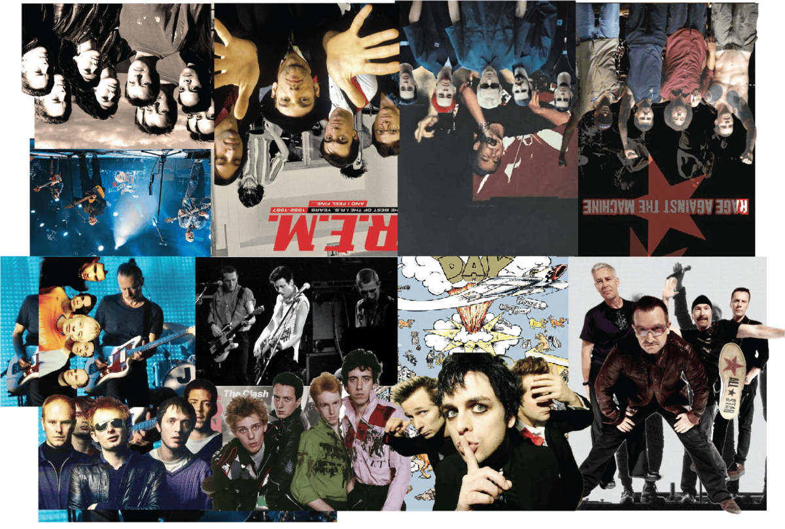
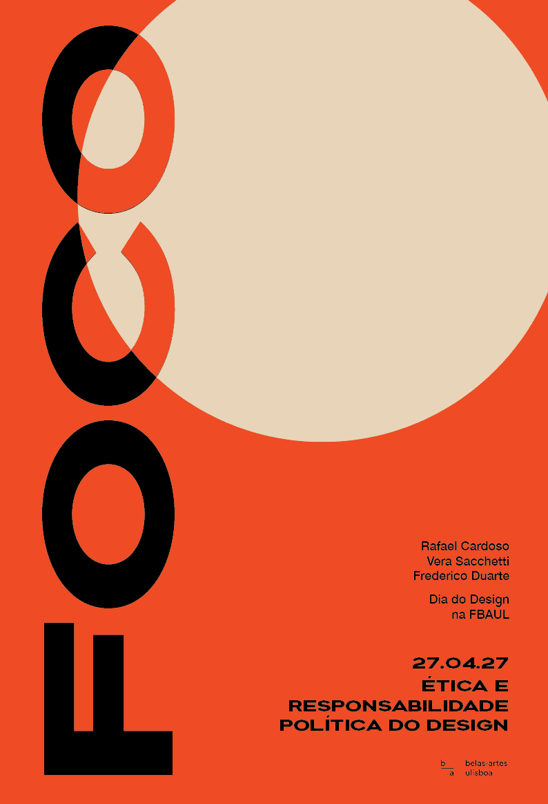
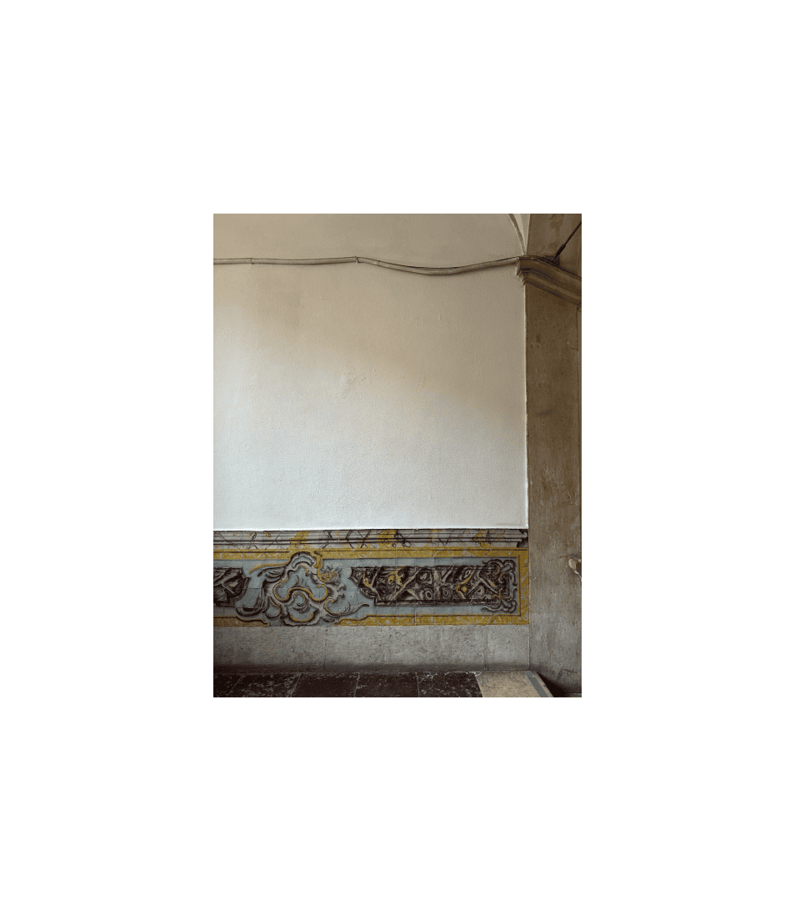
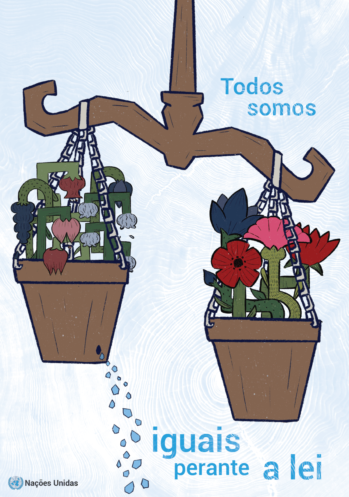
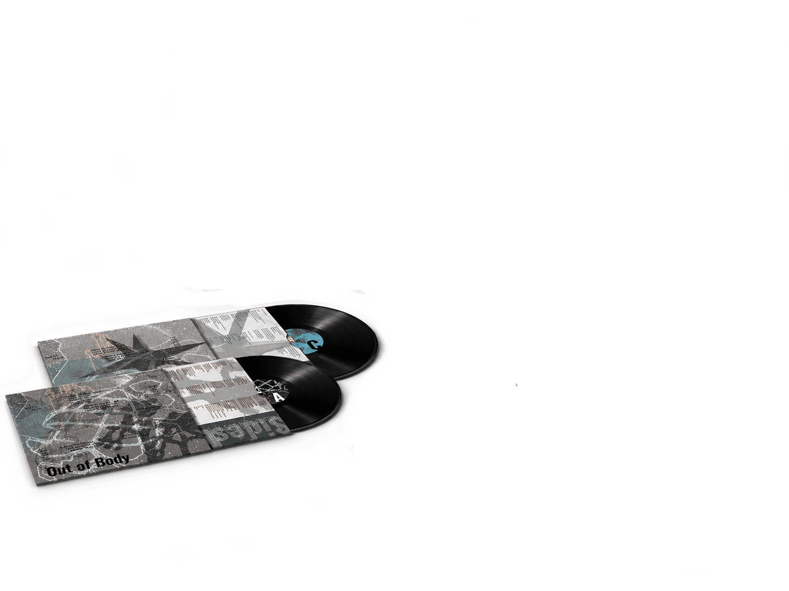
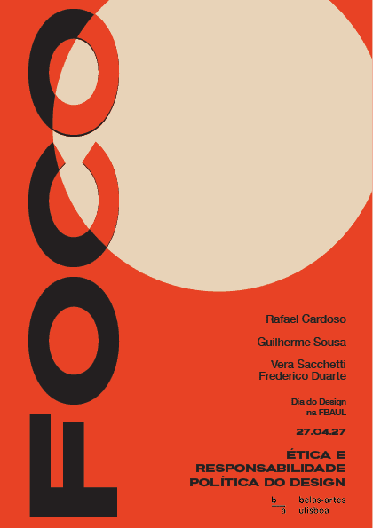

Currently studying at FBAUL — Faculdade de Belas-Artes da Universidade de Lisboa. Focused on editorial design, typography, and visual systems.

An editorial project exploring the boundaries between physical and digital identity through a self-published zine and vinyl LP package.

Visual identity and communication system for a one-day event — including posters, banners, booklets, and digital assets.

A typographic exploration using the CAPSLOCK concept — experimenting with letterforms, hierarchy, and visual tension.

A visual interpretation of UN Article 7 through floral symbols — exploring human rights, dignity, and equality through organic forms.

LP and CD packaging design complementing the zine — a cohesive visual language across formats and materials.

A printed booklet documenting the DIA D event program, speakers, and schedule — designed for clarity and visual continuity.
I'm a design student at FBAUL — Faculdade de Belas-Artes da Universidade de Lisboa — currently in my second year of Communication Design (DCIV). My work spans editorial design, typography, visual identity, and event communication. I'm passionate about creating meaningful visual systems that balance structure, emotion, and clarity.